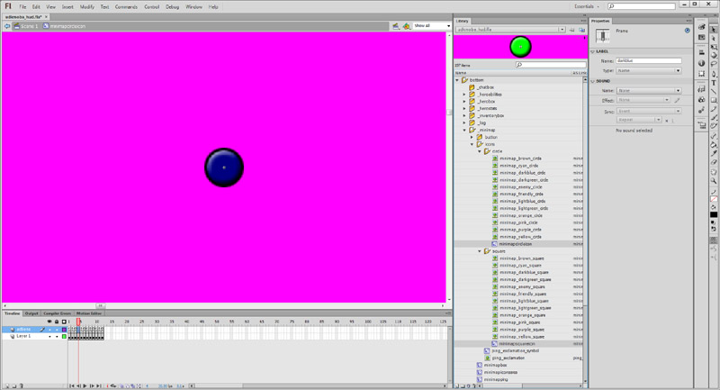
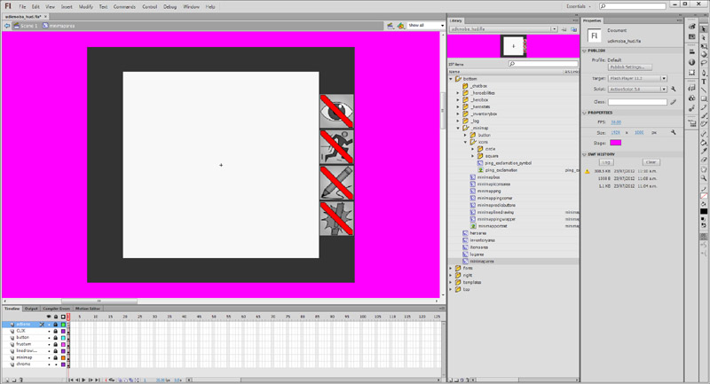

UDN
Search public documentation:
MOBAKitMinimapCH
English Translation
한국어
Interested in the Unreal Engine?
Visit the Unreal Technology site.
Looking for jobs and company info?
Check out the Epic games site.
Questions about support via UDN?
Contact the UDN Staff
한국어
Interested in the Unreal Engine?
Visit the Unreal Technology site.
Looking for jobs and company info?
Check out the Epic games site.
Questions about support via UDN?
Contact the UDN Staff
MOBA初学者工具包- 迷你地图
上次对UDK测试时间为 2012 年 5 月
概述
迷你地图是以易理解的方式向玩家提供世界信息的图形界面工具。

功能套件
迷你地图特性是：
- 共同的界面允许迷你地图上任何种类的Actor展现。
- 使用Scaleform;因此它为跨平台并且允许每个图标的任何种类的动画。
- 允许游戏者ping迷你地图，然后由其他客户端接受。
- PC用户必须按下Ctrl键并左键单击迷你地图来制造ping. 或者他们可以使用P的快捷方式来ping他们目前的英雄位置。
- 移动平台用户必须首先按下迷你地图上的ping按键，然后点击迷你地图的某处来制造ping。
- 游戏机平台用户目前并不拥有此项功能。
- 允许对迷你地图的任意描画。
- PC用户必须按住Alt按键并左键单击和拖曳。 当它们移动鼠标指针时，线被画上来。
- 移动平台用户必须首先按下迷你地图上的铅笔按键，然后点击并拖曳迷你地图来描画。
- 游戏机平台用户目前并不拥有此项功能。
- 允许玩家在迷你地图上点击任何地方来把摄像机移动到那里。
- 移动相机系统使用弹簧，如同正常使用的固定的相机系统。 因此在迷你地图被点击时，相机会移动到该地点；但是会在其不被点击时弹回来。
- 游戏机平台用户目前并不拥有此项功能。
迷你地图图标
Flash
迷你地图符号
 迷你地图图标被存储在Flash中作为图片。 外部拷贝也被存为PNG，这样虚幻编辑器也可以导入它们。 您可以选择性地通过在每个不同的图标间增加更多的帧来制作动画化的迷你地图图标。 迷你地图通过询问相关Actor(更多信息见下方）显示电影片段时跳转到哪一帧来选择正确的地图图标。
迷你地图图标被存储在Flash中作为图片。 外部拷贝也被存为PNG，这样虚幻编辑器也可以导入它们。 您可以选择性地通过在每个不同的图标间增加更多的帧来制作动画化的迷你地图图标。 迷你地图通过询问相关Actor(更多信息见下方）显示电影片段时跳转到哪一帧来选择正确的地图图标。

有两种迷你地图图标代表单位和塔。 这也是通过在附加电影片段时询问相关Actor（更多信息见下方）应选择哪个标识来设置的。迷你地图区域

迷你地图区域被分为数层。 层被用来保存渲染顺序：- actions -这一层包含迷你地图的Actionscript
- CLIK --这一层包含迷你地图的CLIK控件。 让CLIK控件位于大多数层之上很重要，否则其它层会阻碍CLIK控件接受鼠标/点击的事件。
- button -此层包含了迷你地图的按键，可用来捕捉鼠标点击或触摸事件。
- frustum - 此层用来描画相机平头截体.
- linedrawing - 此层用来描画迷你地图的任意线。
- minimap - 此层被用来渲染迷你地图图标和迷你地图贴图。
- chrome -此层被用来渲染迷你地图周围的chrome（铬合金）。
迷你地图盒体
 迷你地图盒体是所有迷你地图图标的动画剪辑。 层已被设置，这样渲染顺序在迷你地图图标的范围内被保持。
迷你地图盒体是所有迷你地图图标的动画剪辑。 层已被设置，这样渲染顺序在迷你地图图标的范围内被保持。
- actions -这一层包含迷你地图的Actionscript
- ping_icons -这层包含了所有的ping迷你地图符号的电影片段。
- hero_icons -这层包含了所有的英雄迷你地图符号的电影片段。
- courier_icons -这层包含了所有的情报迷你地图符号的电影片段。
- creep_icons -这层包含了所有的creep迷你地图符号的电影片段。
- tower_icons -这层包含了所有的塔的迷你地图符号的电影片段。
- building_icons -这层包含了所有的建筑迷你地图符号的电影片段。
- jungle_creep_icons -这层包含了所有的丛林creep符号的电影片段。
- minimap_portrait -这层包含了迷你地图的贴图，显示了世界的鸟瞰图。
Unrealscript
Unrealscript只是处理实例和更新迷你地图图标。 因为Scaleform被用来处理这个问题，Unrealscript并不对渲染或动画化迷你地图图标负责。
UDKMOBAMinimapInterface
UDKMOBAMinimapInterface是一个通用界面，可以允许任何实施的actor在迷你地图上显示并允许其修改迷你地图标记。 这使得个人可以对迷你地图标记进行修改，比如修改颜色，动画类型。函数
- GetMinimapLayer() - 此函数返回枚举，在UDKMOBAMinimapInterface中定义，展现了此迷你地图图标应该实例化的层。 这使得在迷你地图上迷你地图图标混合的更好控制。 当您拥有应该总是放在其他迷你地图图标的顶端的重要迷你地图图标时很有用。
- IsVisibleOnMinimap() - 如迷你地图符号为可见或不可见，此函数相应返回真/假。 例如，如果一个Pawn死亡后需要移除其迷你地图标记；之后如果它的生命值为0或低于0时就会返回false 。 否则会返回true 。
- GetActor() -此函数返回执行此界面的Actor. 这使得您可以存储界面的数列而不是Actor来减少类型转换。
- GetMinimapMovieClipSymbolName() - 这会返回在Flash内储存的AS链接名称。 这使得代码能在Actor的要求下实例化不同的迷你地图图标MovieClip。
- UpdateMinimapIcon() - 这使得界面修改其迷你地图图标电影剪辑。 它可以进一步应用偏移，改变MovieClip参数，播放不同的动画等。
UDKMOBAGFxMinimapIconObject
变量
- MinimapIconMCSymbolName -存储迷你地图图标MovieClip符号，可用来作为标示符。
- MinimapInterface -储存此迷你地图标记代表的迷你地图界面。 存储必须从MinimapActor处类型转换。
- MinimapActor -储存此迷你地图标记代表的actor
- IsVisible -在此迷你地图符号可见或不可见时存储。
- FrameName -存储此电影片段目前所在的帧数名称。
UDKMOBAGFx_HUD
大多数更新迷你地图的实际工作由GFx HUD类完成。变量
- MinimapAreaMC - 指向迷你地图区域的视频剪辑的缓存的GFxObject。
- MinimapMC -缓存的GFxObject指向迷你地图视频剪辑。
- MinimapIconMCLayers -在迷你地图内的所有层的数列 ( MinimapMC ).
- MinimapIcons -在此层内的所有的 UDKMOBAGFxSpellIconObject 实例的数列。
- LayerMC -缓存的GFxObject指向迷你地图视频剪辑。
- LayerMCWidth - LayerMC 缓存的宽度，则还是在Flash分辨率空间的像素坐标。
- LayerMCHeight - LayerMC 缓存的高度，这是在Flash分辨率空间的像素坐标。
- LayerMCName -初始化此层时查找的电影剪辑的名称
- Layer - 此层代表的枚举。 必须在数列内保持独特！
- MinimapIconIndex -一为了确保为迷你地图名称所生成独特的实例名称，使用该索引。
- MinimapInterfaces -在世界内的所有迷你地图actor界面的数列.
函数
当GFx HUD初始化的时候调用 ConfigHUD() 。 以下是所有的MovieClip如何初始化并缓存进Unrealscript作为GFxObjects的地方。 所有的迷你地图层通过使用默认属性所定义的在此处初始化。 AddMinimapInterface() 和 RemoveMinimapInterface() 是能够允许其他类来修改 MinimapInterfaces 数列的函数。 这样的话对于 MinimapInterfaces 数列的严格控制被保持，因为其他类不应随时能添加或移除条目。 额外的检查也被用来确保重复和无效的条目也被检查。 Tick() 被从 UDKMOBAHUD::PostRender() 中调用并和delta时间一样被传递到 RenderDelta 在 Tick() 内， UpdateMinimap() 随后被调用。 UpdateMinimap() 是更新迷你地图符号的主循环。- UpdateMinimap() -首先会有一些检测来确保更新循环有其所需的一切东西。 这些检测会查看本地PlayerController，本地PlayerController的HUD和地图的UDKMOBAMapInfo是否都为合法。 从此处我们复制 MinimapInterfaces 数列到 ProcessingMinimapInterfaces ，而其包含所有需要更新的迷你地图的界面的引用。 下一步， MinimapIconMCLayers 数列被迭代，每次迭代每层都被依次更新。 在每层中，我们会迭代层中存储的每个actor. 当我们处理和更新迷你地图图标位置，我们随后将其从 ProcessingMinimapInterfaces 数列中移除。 如果迷你地图相关的actor不应在迷你地图上可见，则该符号应使用 SetVisible(false) 来隐藏。 首次迭代解决已在迷你地图层中存在的迷你地图界面。 任何在 ProcessingMinimapInterfaces 中剩余的条目需要被添加到合适的迷你地图层。 通过迭代 ProcessingMinimapInterfaces 及添加或替换已经存在的迷你地图标记，我们可以添加所需要的新的迷你地图标记。 我们也会回收之前创建的隐藏的迷你地图标记。
示例实施
UDKMOBACreepPawn
//=============================================================================
// UDKMOBAPawn
//
// MOBA base pawn to create hero/creep pawn archetypes used by the game. Has
// a lot of base functionality that are common to creeps/heroes.
//
// * Has weapon properties, UDKMOBA doesn't need to use the weapon system
// which comes with UE3 as a simplier method will suffice.
// * Has mana properties which are used for spells and so forth.
// * Has effects which happen when moving through water and other physical
// material effects.
// * Has teleport properties which are used when spawning.
// * Handles a lot of base stats used in most MOBA style games.
// * Handles creation of the screen space bounding box.
// * Handles the occlusion mesh effect when the pawn is hidden from view on the
// PC.
//
// Copyright 1998-2012 Epic Games, Inc. All Rights Reserved.
//=============================================================================
class UDKMOBAPawn extends Pawn
Abstract
HideCategories(Movement, Camera, Debug, Attachment, Physics, Advanced, Object)
Implements(UDKMOBAMinimapInterface, UDKMOBATouchInterface, UDKMOBAAttackInterface, UDKMOBAStatsInterface, UDKMOBACommandInterface)
Placeable;
// Snip
// Flash symbol name to use on the minimap
var(GFx) const string MinimapMovieClipSymbolName;
// Snip
/**
* Called when the pawn is initialized
*
* @network Server and client
*/
simulated event PostBeginPlay()
{
local int i;
local PlayerController PlayerController;
local UDKMOBAHUD UDKMOBAHUD;
// Snip
PlayerController = GetALocalPlayerController();
if (PlayerController != None)
{
// Add myself to the local player controller's HUD
UDKMOBAHUD = UDKMOBAHUD(PlayerController.MyHUD);
if (UDKMOBAHUD != None)
{
if (UDKMOBAHUD.HUDMovie != None)
{
UDKMOBAHUD.HUDMovie.AddMinimapInterface(Self);
}
}
}
// Snip
}
// Snip
/**
* This pawn has died
*
* @param Killer Who killed this pawn
* @param DamageType What killed it
* @param HitLocation Where did the hit occur
* @return Returns true if the pawn died
*/
function bool Died(Controller Killer, class<DamageType> DamageType, vector HitLocation)
{
local PlayerController PlayerController;
local UDKMOBAHUD UDKMOBAHUD;
// Snip
PlayerController = GetALocalPlayerController();
if (PlayerController != None)
{
UDKMOBAHUD = UDKMOBAHUD(PlayerController.MyHUD);
if (UDKMOBAHUD != None)
{
if (UDKMOBAHUD.HUDMovie != None)
{
UDKMOBAHUD.HUDMovie.RemoveMinimapInterface(Self);
}
}
}
// Snip
}
// ======================================
// UDKMOBAMinimapInterface implementation
// ======================================
/**
* Returns whether or not this actor is still valid to be rendered on the mini map
*
* @return Returns true if the mini map should render this actor or not
* @network Server and client
*/
simulated function bool IsVisibleOnMinimap()
{
return (Health > 0);
}
/**
* Returns the name of the movie clip symbol to instance on the minimap
*
* @return Returns the name of the movie clip symbol to instance on the minimap
* @network Server and client
*/
simulated function String GetMinimapMovieClipSymbolName()
{
return MinimapMovieClipSymbolName;
}
//=============================================================================
// UDKMOBACreepPawn
//
// Variation of UDKMOBAPawn which is used for the creeps in the world. Creeps
// have a sight range, they give money when they are killed, give experience
// to heroes when killed and are owned by a creep factory placed in the map.
//
// Copyright 1998-2012 Epic Games, Inc. All Rights Reserved.
//=============================================================================
class UDKMOBACreepPawn extends UDKMOBAPawn;
// Snip
// ======================================
// UDKMOBAMinimapInterface implementation
// ======================================
/**
* Returns what layer this actor should have it's movie clip in Scaleform
*
* @return Returns the layer enum
* @network Server and client
*/
simulated function EMinimapLayer GetMinimapLayer()
{
return EML_Creeps;
}
/**
* Updates the minimap icon
*
* @param MinimapIcon GFxObject which represents the minimap icon
* @network Server and client
*/
simulated function UpdateMinimapIcon(UDKMOBAGFxMinimapIconObject MinimapIcon)
{
local PlayerController PlayerController;
local string DesiredFrameName;
PlayerController = GetALocalPlayerController();
if (PlayerController != None)
{
DesiredFrameName = (PlayerController.GetTeamNum() == GetTeamNum()) ? "friendly" : "enemy";
if (DesiredFrameName != MinimapIcon.FrameName)
{
MinimapIcon.GotoAndStop(DesiredFrameName);
}
}
}
迷你地图椎体
迷你地图平截头体是迷你地图上的渲染盒体，代表了相机视角。 这向玩家展现了游戏目前所显示的地图。 当你在画布上画任何线时，最好能使用Actionscript来画线。 这使得界面设计师能显示在哪一层他/她希望能把摄像机平截头体放大，并应用其他特效。
Flash
MOBAMinimapLineDrawing
函数
- drawLine() -使用Flash图画界面在电影剪辑上描画线。
- clear() - 清理所有使用Flash图像界面的电影剪辑的描画线。
Unrealscript
UDKMOBAGFx_HUD
函数
当GFx HUD初始化的时候调用 ConfigHUD() 。 以下是所有的MovieClip如何初始化并缓存进Unrealscript作为GFxObjects/GFxClikObjects的地方。 Tick() 被从 UDKMOBAHUD::PostRender() 中调用并和delta时间一样被传递到 RenderDelta 在 Tick() 内， UpdateMinimapFrustum() 被调用。 UpdateMinimapFrustum() 是更新迷你地图平截头体的主循环。- UpdateMinimapFrustum() - 这是主要的更新摄像机平截头体的更新循环. 我们首先要确保函数能访问本地PlayerController，本地PlayerController的HUD和地图的MapInfo。 下一步，玩家视点被抓取。 生成的 CameraLocation 和 CameraRotation 代表玩家的摄像机位置和旋转。 从此处，通过查看本地游戏视点客户端，我们可以得到目前的视点尺寸。 这在之后可被用来代表游戏视角。 0.f; 0.f代表左上端 0.f; 视点尺寸。X代表右上端角落，诸如此类。 通过反映射屏幕的坐标，我们追溯需要的矢量参数来寻找像素坐标所代表的世界位置。 此处，转换世界空间到迷你地图空间的位置并不重要。 当四个平截头体的坐标都在迷你地图空间时，我们把它们发送到 MinimapFrustumMC ，这样就可以在Scaleform中画线。
UDKMOBAGFxMinimapLineDrawingObject
函数
- Init() - 此函数通过设置 宽度, 高度, 半宽 and 半高 来初始化控件。
- DrawLine() - 这个函数在MovieClip上描画一条线。 这是对Actionscript函数称为 drawLine 的封装函数。
- Clear() - 这个函数清理在MovieClip上所有的线描画 。 这是对Actionscript函数称为 clear 的封装函数。
变量
- 宽度 - 电影剪辑的缓存宽度。
- 高度 - 电影剪辑的缓存高度。
- 半宽 - 电影剪辑的缓存的半宽。
- 半高 - 电影剪辑的缓存半高。
迷你地图Ping
对迷你地图的ping让您可以告知其他玩家在某处有重要的事情正在发生。 ping也可以由游戏事件生成，比如当塔被攻击时。

Unrealscript
UDKMOBAGFx_HUD
函数
- PerformPingUsingWorldSpaceCoordinates() -此函数把世界空间的地点转换到屏幕空间，然后转向 PerformPingUsingScreenSpaceCoordinates().
- PerformPingUsingScreenSpaceCoordinates() - 这个函数自动从屏幕空间转换到迷你地图空间，然后在迷你地图上显示为动画的短片片段。 迷你地图被标记为发送ping的玩家的颜色。
迷你地图命令
迷你地图也可用来作为命令界面来执行运动，攻击或跟从我方单位。 在PC平台上可以通过右击迷你地图来完成。 在移动平台上，这是通过设置正确的单选按钮然后点击迷你地图来完成的。
Unrealscript
因为Flash不会拦截右键点击，我们在一开始必须使用Unrealscript来拦截右键点击。 之后我们在右击时选取鼠标的坐标并从那里处理命令。 在PC上，右键点击当 FireModeNum 为1时在 UDKMOBAPlayerController_PC::PlayerCommanding::StartFire() 被拦截。这会将 UDKMOBAHUD_PC.PendingRightClickCommand 设置为真。 当 UDKMOBAHUD_PC::PostRender() 被原生代码调用，这会调用 UDKMOBAHUD_PC::ProcessCommands() 。 此函数处理所有被搁置的命令。如果 UDKMOBAGFx_HUD.bCapturingMouseInput 为真，那么右键点击被传递给UDKMOBAGFx_HUD。 当迷你地图接受鼠标事件时，*UDKMOBAGFx_HUD.bCapturingMouseInput* 被设置为真。 UDKMOBAGFx_HUD::HandlePendingRightClickCommand() 检查鼠标是否在迷你地图范围内。 如果是的话，它会随后调用 UDKMOBAGFx_HUD::PerformMoveUsingMinimap() 。 UDKMOBAGFx_HUD::PerformMoveUsingMinimap() 转换迷你地图空间位置到世界位置，然后发送移动命令。 在移动平台上，触摸事件首先存储在 UDKMOBAPlayerController_Mobile::InternalOnInputTouch() 的 TouchEvents 数列。 当 UDKMOBAHUD_Mobile::PostRender() 被原生代码调用，这会调用 UDKMOBAHUD_Mobile::ProcessTouchEvents() 。 此函数通过所有的 TouchEvents 迭代，并且如果 UDKMOBAGFx_HUD.MinimapButtonPressed 为真，那么会将触摸事件路线定义到HUD。 UDKMOBAGFx_HUD.MinimapButtonPressed 被设置为真，该处为迷你地图被点击处。
迷你地图描画
迷你地图也可描画。 玩家可以通过它来告诉其他玩家在那个区域有事情正在发生。 在PC平台上，玩家应按下Shift键然后左键点击并拖曳来画线。 在移动平台上，玩家选择合适的单选按键并点击和拖曳迷你地图来描画。 描画线的颜色和玩家指派的颜色一致。

Unrealscript
在PC平台上，玩家按下Shift键不妨来初始化迷你地图的画图模式。 这是通过绑定按键并释放到exec函数并设置布尔值来完成的， UDKMOBAPlayerController_PC.TrackMouseWhileLeftMouseButtonIsHeld . 当 UDKMOBAPlayerController_PC::PostRender() 被调用（从 UDKMOBAHUD::PostRender() 处传递） 通过调用 UDKMOBAGFxMinimapLineDrawingObject::DrawUsingScreenSpaceCoordinates() 使用屏幕空间坐标，它询问HUD的迷你地图线描画movie clip。
函数
- UDKMOBAGFxMinimapLineDrawingObject.DrawUsingScreenSpaceCoordinates() - 此函数使用上次记录的位置和新的位置来画连接线。

{kind=link}
{kind=link}